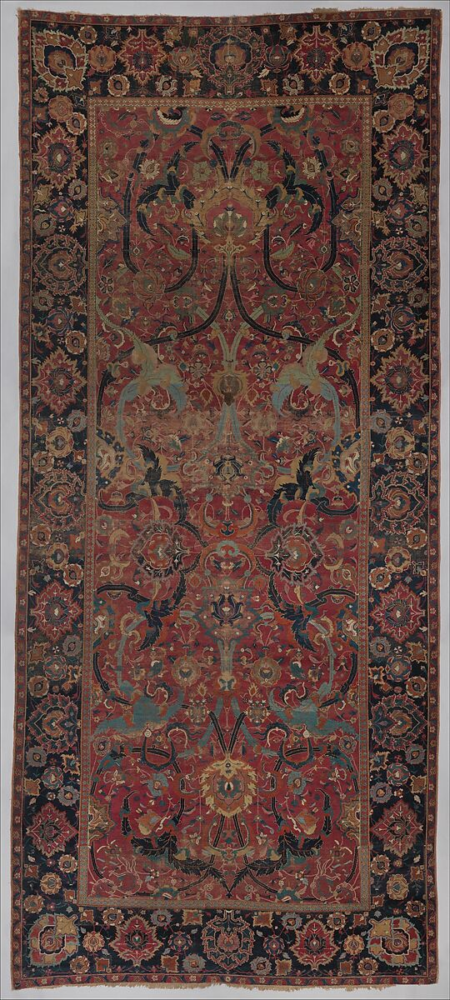
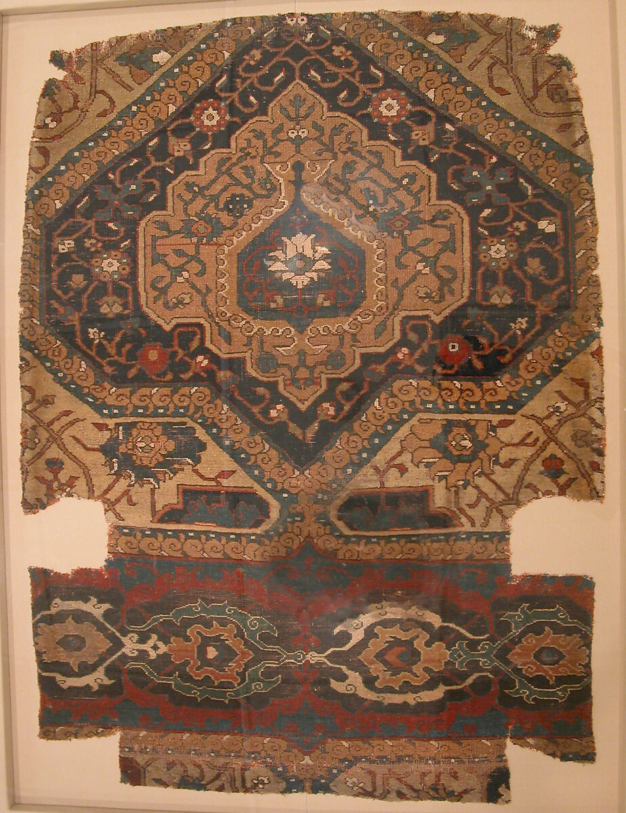

Image register
Only the two verified public-domain museum photographs below are embedded. No museum photograph is generated or altered. Original schematics simplify structure and are not historical evidence.
I01 · Floral Arabesque Carpet

Museum object and Public Domain label · accessed 2026-11-24
Local asset: assets/met-452066.jpg. Display: scaled without distortion; no crop. See assets/museum-metadata.json for API permission metadata.
I02 · Fragment of a Northwest Persian Medallion Carpet

Museum object and Public Domain label · accessed 2026-11-24
Local asset: assets/met-447525.jpg. Display: scaled without distortion; no crop. See assets/museum-metadata.json for API permission metadata.
Original diagrams
D01–D06: schematic boteh, Herati, palmette, islimi, medallion/corners and rug structure. Created in SVG for this project, based on the cited terminology in S01 and S02. They are not reproductions of museum diagrams. These project-authored schematics are released under CC0.
Link-only references
V&A Ardabil images are copyright-labelled: view on the museum website. Royal Collection images are not embedded. No personal photographs are used.